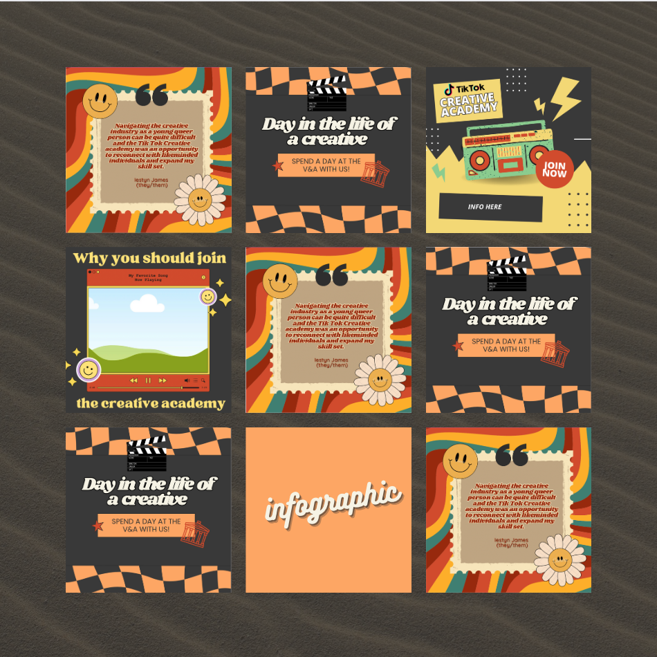

Gallery
Past work from our talented creatives



TikTok Creative Academy provides industry insight into the creative and digital sectors, along with access to creative professionals who will be sharing their experiences and teaching young people how to get a start in the creative world, including how to build a portfolio, how to create a creative CV and how to interview for those positions.
We are aiming to support over 2,500 young people who are not in education, employment or training to get closer to a creative job by 2024.
TikTok works with creative partners across the UK to deliver featured programmes throughout the year. Our last featured creative partner programme was with Stonewall.
Click or hover on an image to read.
I joined the Creative Academy program to help me find a job within the media industry as I am a recent graduate. They helped me improve my skills and I was able to make some creative friends along the way. - Lee
I think navigating the creative industry as a young queer person can be quite difficult and the Tiktok Creative Academy was an opportunity to reconnect with likeminded individuals and expand my skill set. - Iestyn
The Creative Academy has been such a great opportuity to collaborate with other LGBTQ+ creatives and explore our experiences. It has allowed us to develop our skills, showcase our talents and amplify our voices. - Kai
Past work from our talented creatives